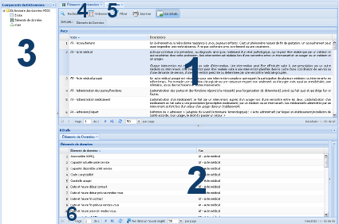

Organisation de
l'interface web du dictionnaire

L'interface du site web du Dictionnaire de données de
la Santé et des Services Sociaux (DDSSS) est
organisée en trois zones majeures (1, 2 et 3 sur l'image):
- La grille «
Principale » au centre de l'interface, qui sert
à afficher le contenu du dictionnaire.
- La grille «
Détails » située dans la partie
inférieure de la grille « Principale », qui
permet l'accès aux détails d'une vue.
- La barre de «
Composantes du Dictionnaire » située du
côté gauche de l'interface, réservée
aux utilisateurs avancés, offre des accès rapides
aux trois composantes principales du dictionnaire : les
éléments de données, les vues et les
entités.
- En cliquant sur l'onglet « éléments de données
», vous aurez accès à la liste
complète des éléments de données du
dictionnaire et aux fonctions rattachées pour la gestion
des éléments de données (recherche,
ordonner, filtrer imprimer). Les fonctions sont disponibles dans
la forme d'une barre à outils.
- L'onglet « Vues
» donne accès à la liste
complète des Actions Terrains (AT), des vues corporatives
et des vues locales des projets du RSSS. Une barre d'outils pour
la gestion des vues est disponible dans cet onglet.
- Le « menu de
navigation » facilite le déplacement entre
les différents pages des résultats affichés
dans la grille " Principale ". Le menu de navigation est
situé dans la partie inférieure de
l'interface.
Quand vous visitez le site web du DDSSS, deux onglets (4 et 5 sur l'image) sont
automatiquement affichés dans l'interface. Ces onglets
sont les points principaux d'accès au contenu du
dictionnaire: les éléments de données des
systèmes et les vues (modèles de données)
des systèmes.